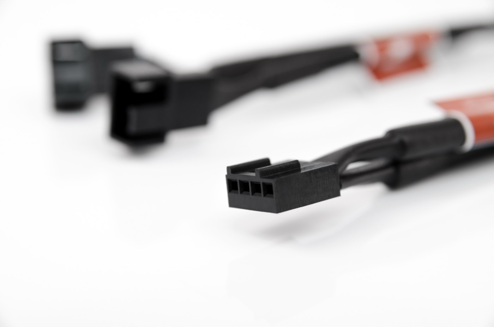
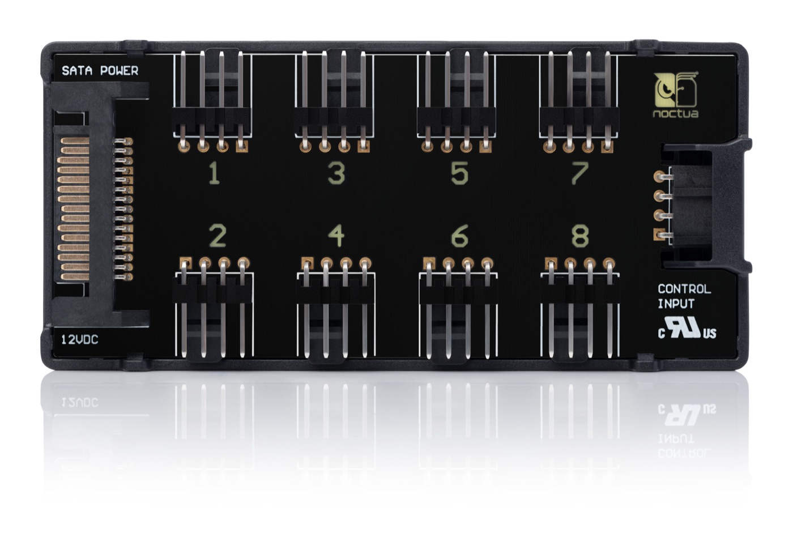
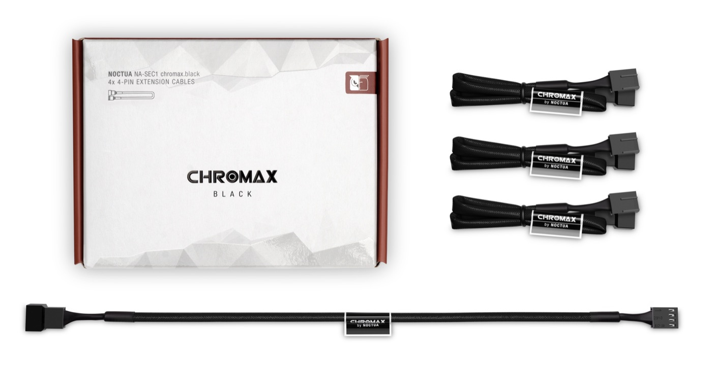
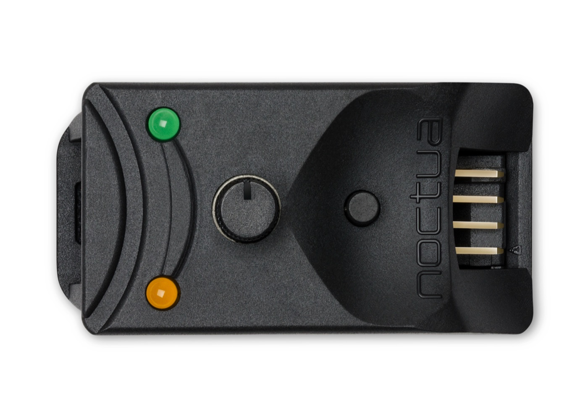
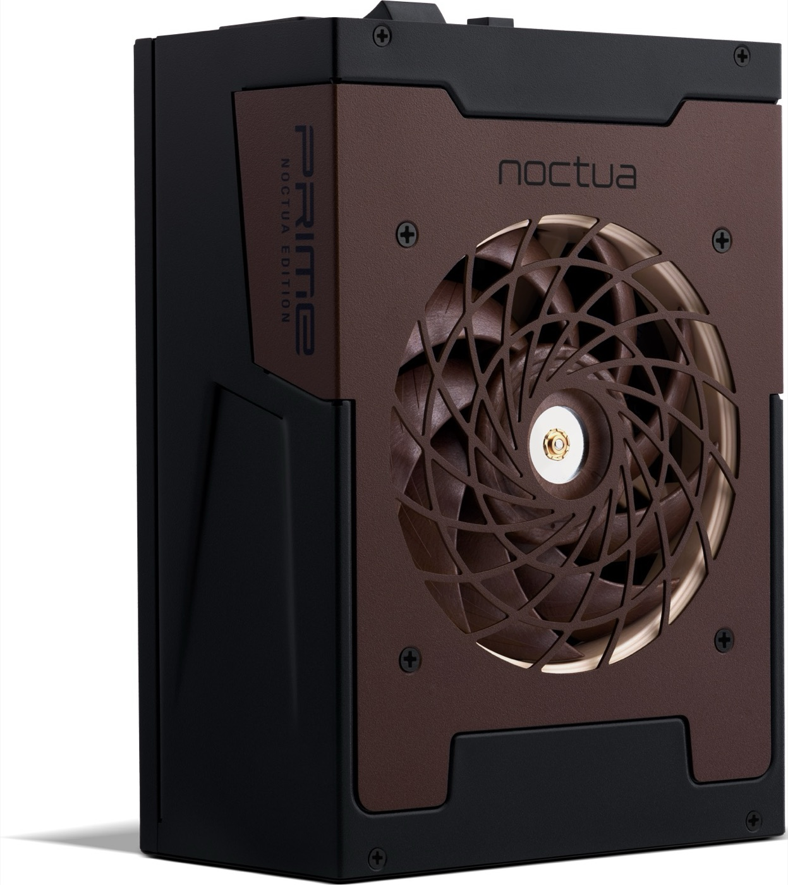

NA-SYC1 — Cable splitter Y
Conecta 2 ventiladores PWM a un solo header de motherboard
Cable Y de bifurcación que permite controlar 2 ventiladores con un solo header PWM. Útil cuando la motherboard tiene pocos headers de fan.
Las rejillas Noctua NA-FG1 son rejillas metálicas que se atornillan al ventilador para protegerlo de cables, dedos y objetos del exterior del gabinete. Especialmente útiles cuando el ventilador queda expuesto.
Sx2 vs Sx5: Sx2 = pack de 2 unidades (uso individual); Sx5 = pack de 5 unidades (taller o builds completos).
| Tamaño | SKU 2-pack | SKU 5-pack | Aplicación |
|---|---|---|---|
| 40 mm | NA-FG1-4 Sx2 | NA-FG1-4 Sx5 | Servidores 1U, NUC, Raspberry Pi |
| 50 mm | NA-FG1-5 Sx2 | NA-FG1-5 Sx5 | Equipos compactos especializados |
| 60 mm | NA-FG1-6 Sx2 | NA-FG1-6 Sx5 | Servidores 2U, switches |
| 70 mm | NA-FG1-7 Sx2 | NA-FG1-7 Sx5 | Equipos especializados |
| 80 mm | NA-FG1-8 Sx2 | NA-FG1-8 Sx5 | Gabinetes pequeños, fuentes de poder |
| 92 mm | NA-FG1-9 Sx2 | NA-FG1-9 Sx5 | Gabinetes mid-tower antiguos, coolers compactos |
| 120 mm | NA-FG1-12 Sx2 | NA-FG1-12 Sx5 | Estándar moderno — gabinete y AIO |
| 140 mm | NA-FG1-14 Sx2 | NA-FG1-14 Sx5 | Gabinete grande, AIO 280/420 |
| 200 mm | NA-FG1-20 Sx2 | NA-FG1-20 Sx5 | Gabinetes grandes con ventilador 200mm |
Almohadillas de silicona que se montan en las esquinas del ventilador para absorber vibración. Reducen drásticamente el ruido de baja frecuencia que se transmite al gabinete.
| SKU | Modelo | Color | Notas |
|---|---|---|---|
| NA-SAV2-BLACK | NA-SAV2 Chromax Black | Negro | Para fans estándar 25mm |
| NA-SAV2-RED | NA-SAV2 Chromax Red | Rojo | Builds con acento rojo |
| NA-SAVG2 | NA-SAVG2 | Beige Noctua estándar | Combina con NF estándar |
| NA-SAVG2 CH.BK | NA-SAVG2 Chromax Black | Negro | Build estético negro |
| NA-SAVP1-GREY | NA-SAVP1 | Gris | Para fans redux |
| NA-SAVP1-WHITE | NA-SAVP1 | Blanco | Builds estética blanca |
Bloques de silicona que se montan entre dos ventiladores en push-pull o entre ventilador y radiador. Mejoran el flujo de aire y reducen turbulencia entre los dos ventiladores.
| SKU | Tamaño | Color | Cantidad |
|---|---|---|---|
| NA-IS1-12 SX2 | 120 mm | Beige | 2 piezas |
| NA-IS1-12 CH.BK SX2 | 120 mm | Chromax Black | 2 piezas |
| NA-IS1-14 SX2 | 140 mm | Beige | 2 piezas |
| NA-IS1-14 CH.BK SX2 | 140 mm | Chromax Black | 2 piezas |
Soluciones de cableado para ventiladores Noctua: extensiones cuando el cable original no llega al header, splitters cuando hay más ventiladores que headers en la motherboard.

Cable Y de bifurcación que permite controlar 2 ventiladores con un solo header PWM. Útil cuando la motherboard tiene pocos headers de fan.

Hub que permite conectar múltiples ventiladores a una sola fuente PWM. Útil para gabinetes con muchos ventiladores.

4 cables de extensión PWM de 30 cm cada uno. Útil cuando el cable del ventilador no llega al header de la motherboard, especialmente en gabinetes grandes.

Controlador físico con perilla de ajuste manual para hasta 3 ventiladores PWM. Útil cuando quieres control instantáneo del RPM sin entrar a BIOS o software.
SKU: NA-FC1
Herramientas de calidad premium con la misma filosofía que los ventiladores y coolers Noctua.

Los tornillos Torx TX20 son comunes en motherboards de alta gama (especialmente Intel LGA 1700+ y muchos AM5). Sin la herramienta correcta es difícil quitarlos.
SKU: NM-SD1

Phillips PH2 es el desatornillador más usado para construir PC. Esta versión Noctua tiene mango ergonómico y punta magnética.
SKU: NM-SD2

SKU: SEASONIC PRIME TX-1600 NOCTUA EDITION
Para precios actualizados, disponibilidad y todas las presentaciones, consulta nuestro catálogo digital. Si necesitas asesoría para tu caso específico, escríbenos directamente.
Ver catálogo digital